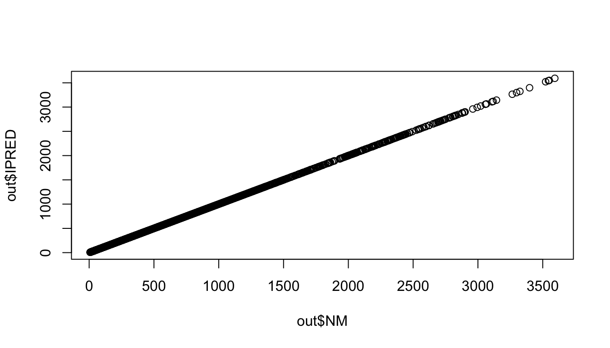
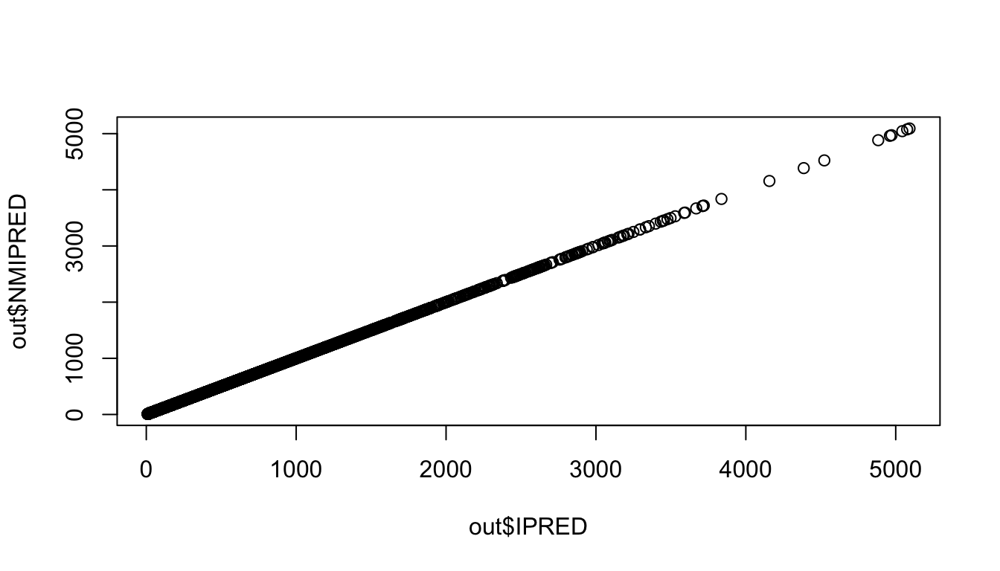

runno <- 106
mod <- mread(here(glue("model/pk/{runno}.mrgsolve")))Loading required namespace: xml2Building 106_mrgsolve ... done.There are easy ways to validate the model you coded when you have a finished NONMEM run.
Outputs from the finished NONMEM run provide reference values and simulations from mrgsolve provide test values which are compared against the reference.
Recommendation
PREDFirst, load the mrgsolve model that you want to validate
runno <- 106
mod <- mread(here(glue("model/pk/{runno}.mrgsolve")))Loading required namespace: xml2Building 106_mrgsolve ... done.Next load in the model estimation data set.
csv <- read_csv(here("data/derived/analysis3.csv"), na = ".")
head(csv, n = 3)# A tibble: 3 × 34
C NUM ID TIME SEQ CMT EVID AMT DV AGE WT HT EGFR
<lgl> <dbl> <dbl> <dbl> <dbl> <dbl> <dbl> <dbl> <dbl> <dbl> <dbl> <dbl> <dbl>
1 NA 1 1 0 0 1 1 5 0 28.0 55.2 160. 114.
2 NA 2 1 0.61 1 2 0 NA 61.0 28.0 55.2 160. 114.
3 NA 3 1 1.15 1 2 0 NA 91.0 28.0 55.2 160. 114.
# ℹ 21 more variables: ALB <dbl>, BMI <dbl>, SEX <dbl>, AAG <dbl>, SCR <dbl>,
# AST <dbl>, ALT <dbl>, CP <dbl>, TAFD <dbl>, TAD <dbl>, LDOS <dbl>,
# MDV <dbl>, BLQ <dbl>, PHASE <dbl>, STUDYN <dbl>, DOSE <dbl>, SUBJ <dbl>,
# USUBJID <chr>, STUDY <chr>, ACTARM <chr>, RF <chr>Next, load the table file that contains PRED
tab <- read_table(here(glue("model/pk/{runno}/{runno}.tab")), skip = 1)
head(tab, n = 3)# A tibble: 3 × 8
NUM IPRED NPDE CWRES DV PRED RES WRES
<dbl> <dbl> <dbl> <dbl> <dbl> <dbl> <dbl> <dbl>
1 1 0 0 0 0 0 0 0
2 2 68.5 -0.633 -0.512 61.0 60.6 0.422 -0.533
3 3 90.8 0.403 0.126 91.0 78.5 12.4 0.142Now join them together with tab on the left; the NUM column provides a key to join these two
data <- left_join(tab, csv, by = "NUM")
head(data, n = 3)# A tibble: 3 × 41
NUM IPRED NPDE CWRES DV.x PRED RES WRES C ID TIME SEQ
<dbl> <dbl> <dbl> <dbl> <dbl> <dbl> <dbl> <dbl> <lgl> <dbl> <dbl> <dbl>
1 1 0 0 0 0 0 0 0 NA 1 0 0
2 2 68.5 -0.633 -0.512 61.0 60.6 0.422 -0.533 NA 1 0.61 1
3 3 90.8 0.403 0.126 91.0 78.5 12.4 0.142 NA 1 1.15 1
# ℹ 29 more variables: CMT <dbl>, EVID <dbl>, AMT <dbl>, DV.y <dbl>, AGE <dbl>,
# WT <dbl>, HT <dbl>, EGFR <dbl>, ALB <dbl>, BMI <dbl>, SEX <dbl>, AAG <dbl>,
# SCR <dbl>, AST <dbl>, ALT <dbl>, CP <dbl>, TAFD <dbl>, TAD <dbl>,
# LDOS <dbl>, MDV <dbl>, BLQ <dbl>, PHASE <dbl>, STUDYN <dbl>, DOSE <dbl>,
# SUBJ <dbl>, USUBJID <chr>, STUDY <chr>, ACTARM <chr>, RF <chr>Now, simulate from this data set after turning off all the random effects. We also bring EVID and PRED into the output to help post-processing
out <-
mod %>%
zero_re() %>%
obsonly() %>%
mrgsim(data = data, recover = "NM = PRED", output = "df", digits = 5)
head(out, n = 3) ID TIME GUT CENT PERIPH CL V2 IPRED Y NM
1 1 0.61 1.93350 2.9359 0.064811 3.0305 48.46 60.583 60.583 60.583
2 1 1.15 0.83383 3.8064 0.177380 3.0305 48.46 78.548 78.548 78.548
3 1 1.73 0.33787 4.0241 0.312270 3.0305 48.46 83.040 83.040 83.040Notice, too, we limited the number of output digits to 5 (what NONMEM is giving).
Now, we have the NONMEM-generated PRED in the data as NM (the reference) and we can pick between IPRED and Y as the test.
plot(out$NM, out$IPRED)
summary(out$NM - out$IPRED) Min. 1st Qu. Median Mean 3rd Qu. Max.
0 0 0 0 0 0 This mrgsolve model gives identical result.
IPREDMore recent versions of mrgsolve also allow you to validate by IPRED.
Read in an additional table that contain the post-hoc ETA values
tab <- read_table(
here(glue("model/pk/{runno}/{runno}par.tab")),
na = '.', skip = 1
)
etas <- select(tab, matches("NUM|ETA"))and we join this to the data set
data <- left_join(data, etas, by = "NUM")Now, we simulate with the etasrc option set to data.all and recovering IPRED into the output
out <- mrgsim(
mod,
data,
etasrc = "data.all",
obsonly = TRUE,
recover = "NMIPRED = IPRED, NMPRED = PRED",
digits = 5
)And summarize again
plot(out$IPRED, out$NMIPRED)
summary(100*(out$IPRED - out$NMIPRED)/out$NMIPRED) Min. 1st Qu. Median Mean 3rd Qu. Max.
-8.861e-03 0.000e+00 0.000e+00 4.452e-05 0.000e+00 9.092e-03